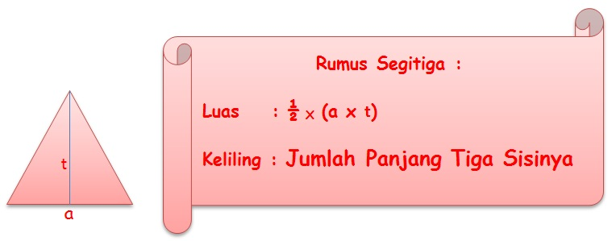

MATERI SEGITIGA

Ciri-ciri bangun segitiga adalah sebagai berikut :
Segitiga menurut besar sudutnya dibedakan menjadi :
Segitiga lancip adalah segitiga yang besar masing-masing sudutnya kurang dari 90o.
Segitiga siku-siku adalah segitiga yang besar salah satu sudutnya 90o.
Segitiga tumpul adalah segitiga yang besar salah satu sudutnya lebih dari 90o.
Dilihat dari sisinya segitiga dapat dibedakan menjadi:
Segitiga sembarang yaitu segitiga yang ketiga sisi dan sudutnya tidak sama.
Segitiga sama kaki adalah segitiga yang kedua sisi kakinya sama panjang dan kedua sudutnya sama besar.
Segitiga siku-siku adalah segitiga yang salah satu sudutnya 90o, dan ada dua sisi yang saling tegak lurus (yaitu sisi AB dan AC).
Segitiga sama sisi adalah segitiga yang ketiga sisinya sama panjang (AB = BC = AC) dan ketiga sudutnya sama besar yaitu masing-masing besarnya 60o. |